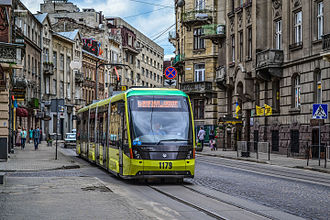

У Львові є 4 види громадського транспорту: трамвай, тролейбус, автобус, маршрутне таксі. На останніх двох припадає 64 % пасажирських перевезень. Вартість проїзду в трамваях та тролейбусах становить 2 гривні загальний квиток та 1 гривня — пільговий, в автобусах та маршрутних таксі 4 гривні. У грудні 2009 був запущений міський рейковий автобус, однак після шести місяців роботи був закритий через нерентабельність. Сьогодні реалізовано масштабний проект «трамваю на Сихів». Перший такий було запущено 17 листопада 2016 року. З 1 липня 2015 року у місті діють нічні автобуси.
на головну